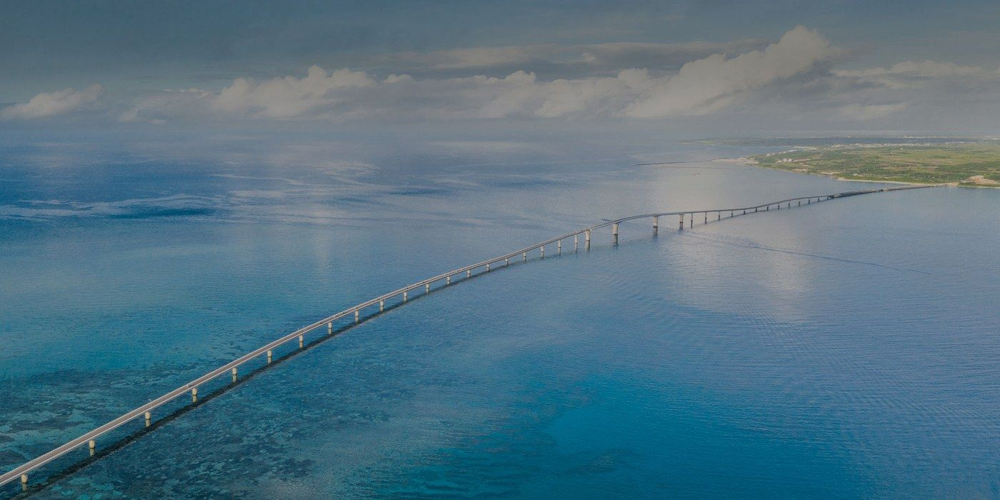

Miyakojima · Hotel Dining
宮古島
飯店高級餐廳
Resort Restaurants Guide
9/26（六）・9/27（日）午晚餐候選
21 間・寫清楚在哪間飯店、離瑰麗多遠
想吃的點 ♡，最下面一鍵複製清單給小煜
向下捲動 ⌄
怎麼用
：往下一路看完三個區域，每間餐廳右上角的 ♡ 點一下就是「想吃」，最下面「想吃清單」按一鍵複製傳給小煜。照片點一下可以放大、左右滑。
♥ 想吃清單
點過愛心的店會自動整理在這裡・一鍵複製貼到 LINE 給小煜
♥ 想吃清單
還沒選
還沒有選——往上點餐廳右上角的 ♡ 就會加進來。
一鍵複製清單
清空
複製後打開 LINE 貼上傳給小煜即可・清單會存在這支手機，下次打開還在
♥ 想吃
0
間・看清單
×
‹
›